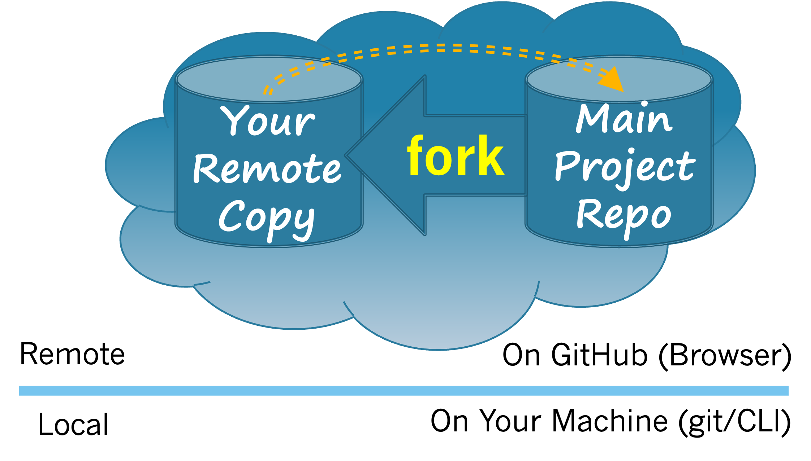
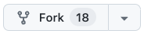

In Section 3.4 you saw how FOSS communities can use a basic workflow to collaborate. In this section you will begin to gain hands-on experience with that workflow. Figure 3.5.1 illustrates first step in the workflow. In this step you will fork the main project repository, which creates a copy of it into your own GitHub space.

Figure3.5.1.Forking the main project repository.
Note that when working on the GitKit you will not actually be interacting with the main FarmData2 repository. Instead, you will be interacting with a copy of the FarmData2 repository that was created just for these activities. That said, you will be treating this copy exactly as if it is the “Main Project Repo” or the upstream repository. This allows you, your classmates and many other students to practice interacting with an upstream project for learning purposes without affecting the main FarmData2 repository.
Exercises
1.
Your instructor will have provided you with the URL of the GitKit FarmData2 repository that you will be using as the main project repo (i.e. the upstream) for the exercises in this text.
Give the full URL to the GitKit FarmData2 repository that you will be using as the upstream, for example: https://github.com/yourClass/theRepoName
Hint.
Check the course materials from your instructor. It should provide the URL of the GitKit FarmData2 repository that was created for your course.
2.
Visit the upstream repository from Exercise 3.5.1 in your browser and then complete the following tasks to create your fork.
(a)
Find the "Fork" button on the upstream repository page.

Hint.
The fork button will be toward the upper right hand corner of the browser window.
(b)
Click the “Fork” button to create your own fork of the upstream repository. Be sure to pick the GitHub username you used in Exercise 3.2.2 in the "Choose an owner" box so that your fork will be created in your GitHub space.
3.
Give the full URL of your fork of the upstream, for example: https://github.com/yourGitHub/theRepoName
Hint.
The URL you give here should contain your GitHub username. Be sure you are looking the copy of the GitKit FarmData2 repository that is in your GitHub space.
4.
Notice that in Figure 3.5.1 there is an dashed orange arrow pointing from your remote copy (i.e. your origin) to the main project repo (i.e. the upstream). This arrow is indicating that your fork knows where the upstream project repository is located.
(a)
Visit your origin repository on GitHub. There is some text and a link on that page that corresponds to the orange dashed arrow in Figure 3.5.1. Copy and paste that text and link here.
Hint.
This text and link will be near the repository name in the upper left corner of the window.
(b)
Which step of the basic FOSS workflow would require that your origin repository know the location of the upstream repository?
Pull request
Fork
Clone
Edit
Push
Hint.
Think about which step of the basic FOSS workflow needs to send information back to the main project.
(c)
Explain in a few sentences why your origin repository keeps track of the location of the upstream repository from which it was forked.
Hint.
Be sure to state which operation in the basic FOSS workflow uses this information and the function performed by that operation.
5.
When you forked the upstream repository, GitHub made a copy of that repository into your GitHub space.
Did it also make a copy of the issue tracker and its issues into your GitHub space? What reasons can you think of for why the designers of GitHub decided that the issue tracker should not be copied into the fork?